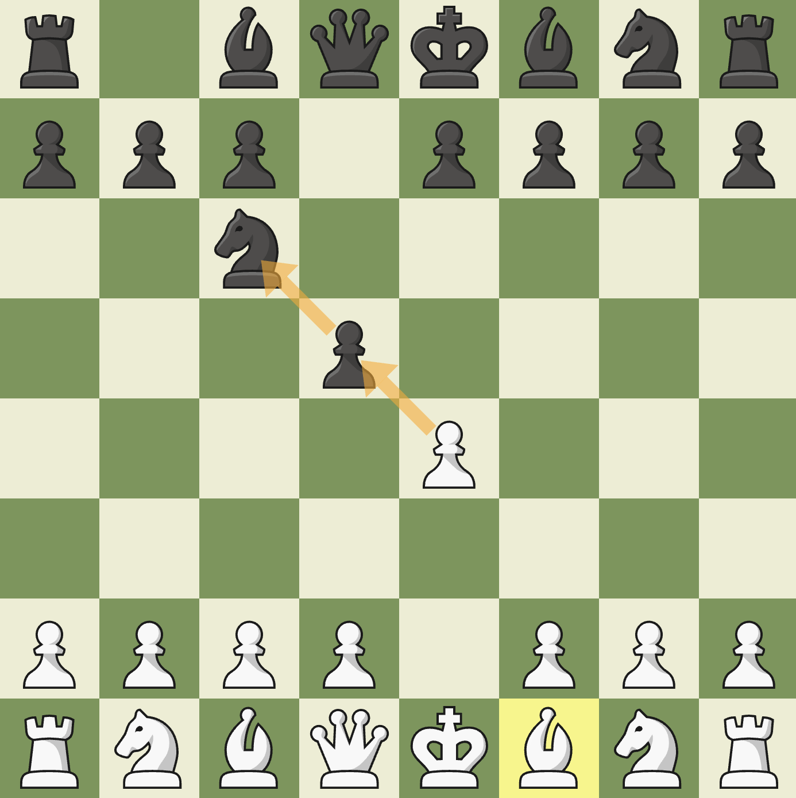
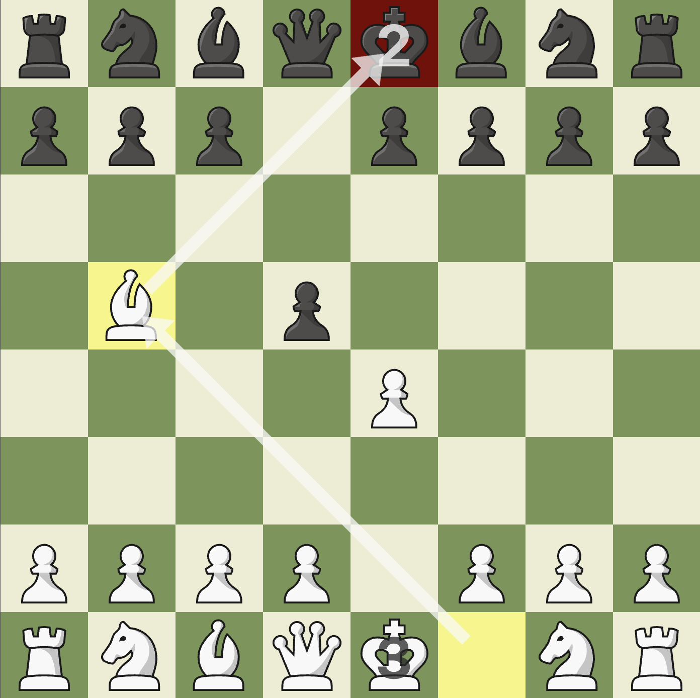
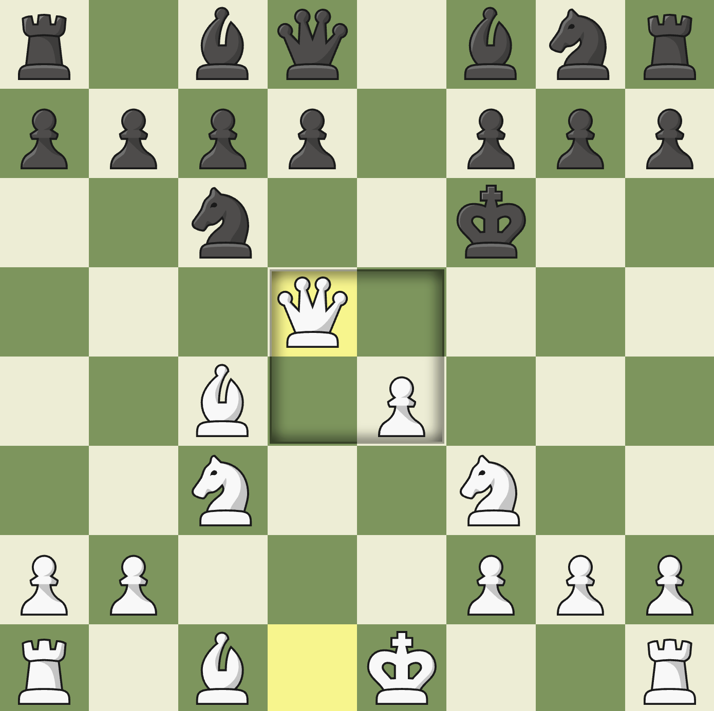

The goal category features variants that change the way to win. Instead of checkmating the opponent, you need to accomplish a different goal.
| Variant Name | Giveaway | 3+ (3 Check) | King of the Hill |
|---|---|---|---|
| Game Length | Normal | Very Short | Normal |
| Strategy | ★★☆☆☆ | ★★★☆☆ | ★★★★☆ |
Giveaway
Rules
Giveaway chess completely changes the rules of chess. Instead of trying to checkmate the opponent, you have to either lose all of your pieces or not be able to move a piece on your turn. Now, this would be a pretty boring game without extra rules, because players could chose to just not to take any pieces. To counter this, a rule was added to force players to take a piece when they can, and if you can take multiple pieces, you can chose which onen to take. If your king is taken, you keep playing, and you can even promote a pawn to king!
Strategy
Although Giveaway Chess completely changes the point of the game, the strategy is way easier to understand. For your first move, you need to make sure you make a move that doesn't let your opponent immediately lose a piece. For exmaple, e4 is a pretty bad first move because your opponent can counter with f5 and you are already forced into a chain of takes. In the early game, try to move your pawns only 1 space, and avoid moving knights into the center. Your main priority is forcing your opponent into a position where they have to continuosly tke your pieces. The pieces you should try to get rid of are mainly queen and knights because they have very good mobility. For the endgame, letting your opponent promote a pawn isn't a bad idea, because they will be forced to get a better piece, which gives you more chances to blunder your own pieces.
3+ (3 Check)
Rules
3+ Chess has really simple rules. In addition to being able to checkmate the opponent's king, you can also win by putting them in check 3 times. Think of the king having 3 lives, and every time he is put in check, he loses one life. Other than that, all the rules are exactly the same.
Strategy
3+ Chess is one of my favorite variants because of the fast paced and aggressive strategy that comes with it. The main thing for you to keep in mind is that if you can check your opponent safely, check them. You should also keep in mind that your king also needs to stay safe, which is why castling early is a very good strategy. One of the best openings for this variant is the King's Fianchetto. The reason for this is that your king is castled, your pawns are in a good structure, and you develop a knight and bishop that can defend your king and pressure the opponent. I would definitely prioritize knights over bishops, because they have the capabilities of checking the king easily, especially in the endgame. Avoiding bishops is easy, because they only have one color square to attack, and you can move your king to safety easily.
King of the Hill
Rules
King of the Hill is another one of my favorite variants. The only goal is to get your king to one of the middle 4 squares or checkmate your opponent. Just to clear up any confusion, the middle 4 squares are d4, d5, e4, e5.
Strategy
The strategy on this variant varies based on you playstyle. Your first objective is to get a strong defence on middle. If you can't control middle, you can't really do anything. Next, there's two strategies; push your pieces forward and rush your king, or play agressive and try to checkmate the king. I don't recommend pushing the king early, because it gives the opponent the opportunity to checkmate you, and you also spend your turns moving the king instead of defending middle. The image on the left describes this well. Watch how white developed all of their pieces, but black pushed the king early. The king can barely move anywhere now, and is very vulnerable. Try to avoid castling as it gets your king out of the middle of the board. Instead, I recommend moving your king up one space, still safe, but a little more out there. This gets your king a little closer to middle, and helps you develop your rooks. Developing all your pieces is the most important part of this variant. Do not waste any pieces.